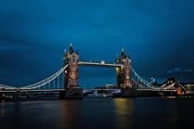

London
it is most populous city in the United Kingdom,with a metropolian area of 9 million inhabitants. 
Paris
The Paris area is one of the largest population centres in Eupore with more than 12 million inhabitants.

Tokyo
Tokyo is also the financial, cultural, and industrial center of Japan and With a mentropolitan area of 40.8 million inhabitants.